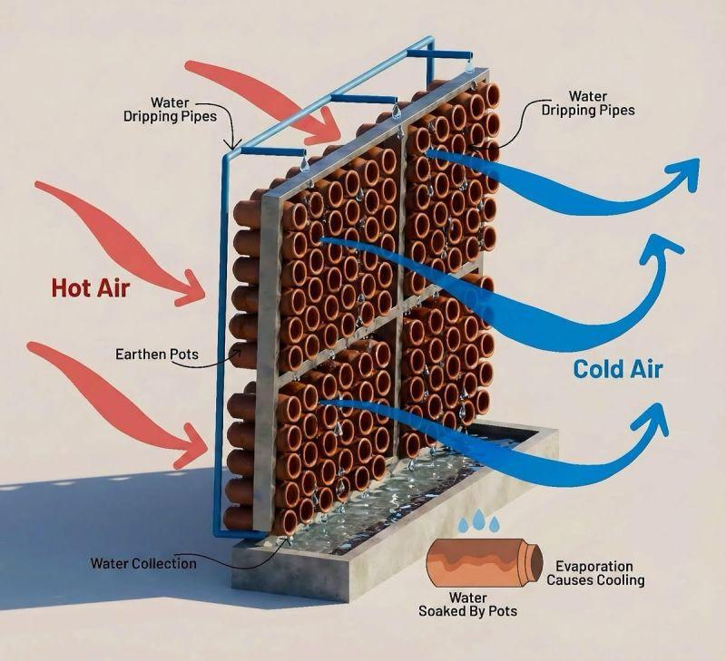

01
Cooling & Air
Cool Air Wall
A small wall model that explores how porous materials can support airflow and reduce heat buildup.
Model: Build two small wall samples, one solid and one made with a porous material.
Test: Compare airflow and temperature under the same conditions.
Challenge: High indoor temperatures and reliance on mechanical cooling.